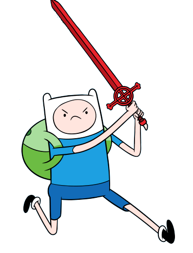
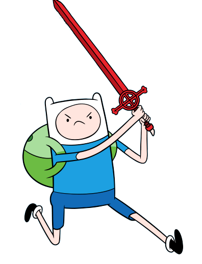

Nome: Finn Mertens
Gênero: Masculino
Idade:
12 Anos (1ª Temporada)
13 Anos ("Trem Misterioso")
14 Anos ("Incêndio")
15 Anos ("Simon & Marcy")
16 Anos ("O Cometa")
17 Anos ("Dezessete")
Espécie: Humano
Finn, o humano, é um personagem central da série animada Hora de Aventura,
conhecido por suas aventuras e seu espírito aventureiro.
Ele é adotado por Joshua e Margaret (pais biológicos de Jake)
e cresce ao lado de seu melhor amigo e irmão adotivo, Jake.
Saiba mais sobre o personagem